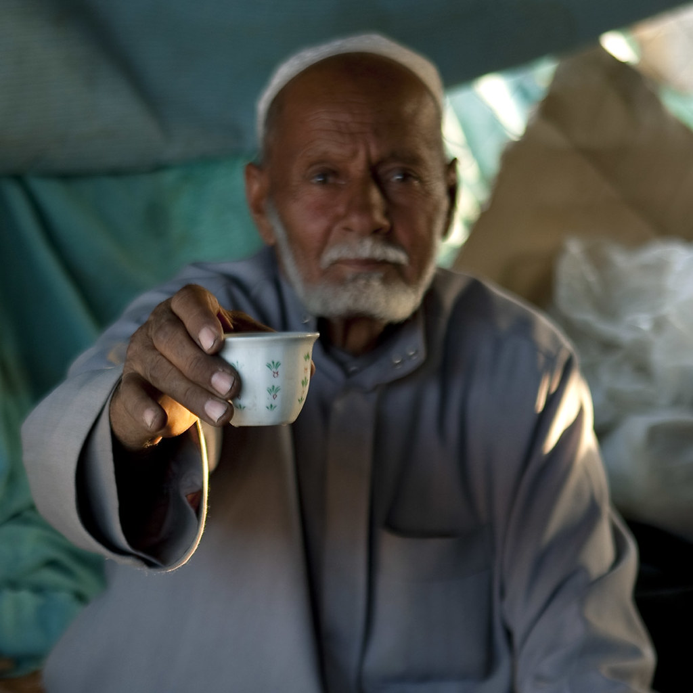

Despite the country's rapid modernization, traditional values and customs
remain an integral part of Saudi culture, shaping the personalities of its people into warm, respectful,
and generous individuals.
Hospitality
Saudis are known for their warm and welcoming nature, often going out of their way to make guests feel at home.
It is an integral part of Saudi culture, with visitors often being treated to lavish feasts
and generous offers of refreshment.

Generosity
Saudis are often quick to offer assistance, whether it's helping a stranger in need or providing
financial support to those less fortunate.This generosity is a hallmark of Saudi culture, and it's
something that's deeply ingrained in the Saudi personality
Respecting the Local Way
Dress modestly, You'll want to cover your shoulders and knees as a sign of respect.
This is a conservative country, so it's essential to be respectful of local customs and
laws and make sure to Avoid public displays of affection.